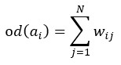
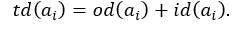
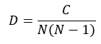

1. Статический анализ осуществляется на вкладке статического анализа. Для перехода на эту вкладку с другой вкладки необходимо нажать на заголовок «Статический анализ».
2. В левой части вкладки представлена таблица, в которой содержатся характеристики отдельных факторов:
2.1. Исходящая степень, как суммарное не транзитивное влияние данного фактора на остальные:

2.2. Входящая степень, как суммарная не транзитивная зависимость данного фактора от других:
2.3. Центральность:

3. Над таблицей может быть выполнена сортировка по убыванию или возрастанию при нажатии на заголовок соответствующего столбца (после первого нажатия – по возрастанию, после второго – по убыванию). По умолчанию таблица отсортирована в алфавитном порядке названий факторов.
4. В верхней части вкладки в первой строке представлены характеристики НКК в целом:
4.1. Плотность (коэффициент кластеризации):

где N – число факторов; C – число связей.
4.2. Индекс иерархичности:

4.3. Сложность:

где R – число факторов, имеющих входящие связи; T - число факторов, имеющих исходящие связи.
5. Настройка определения влияния фактора друг на друга осуществляется во второй строке в верхней части вкладки. Необходимо задать анализируемый фактор, режим: определяетcя влияние на фактор или влияние фактора на все остальные, а также число шагов, на которое транзитивно распространяется влияние фактора. В результате, в соответствии с заданными настройками, влияние факторов отображается графически в области справа в виде цветов факторов, а именно на основе цветов термов, соответствующих рассчитанному влиянию. При этом цвета связей соответствуют цветам на вкладке построения НКК графическим методом.